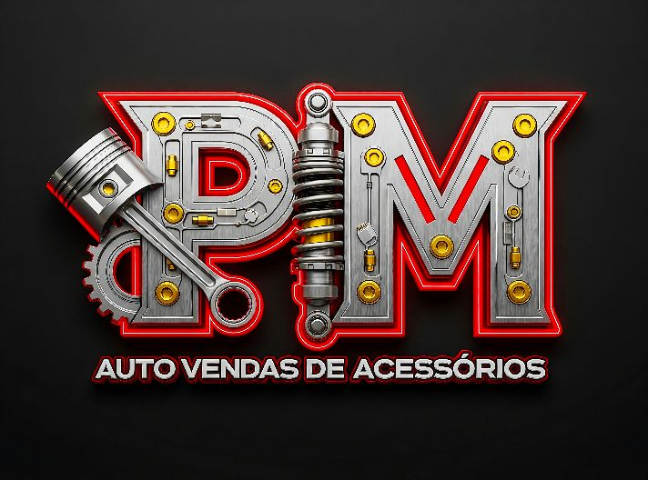
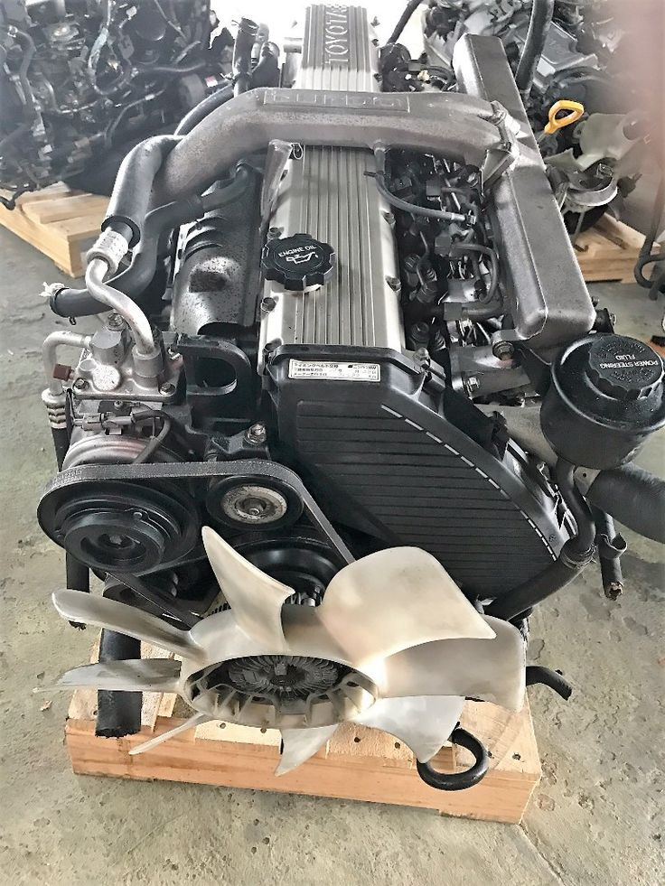
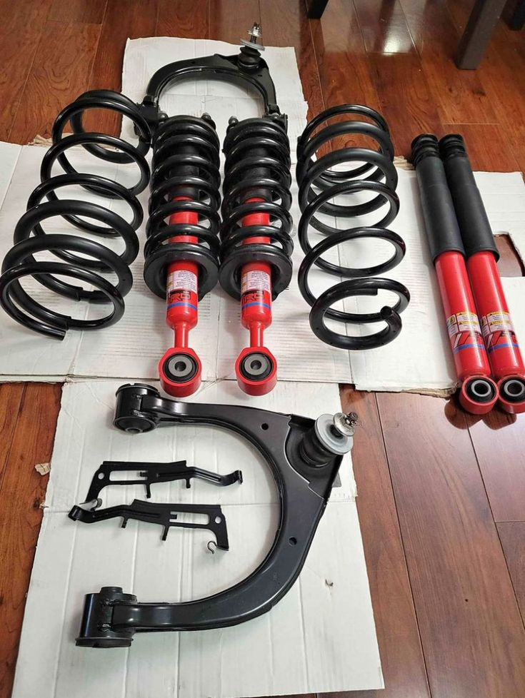
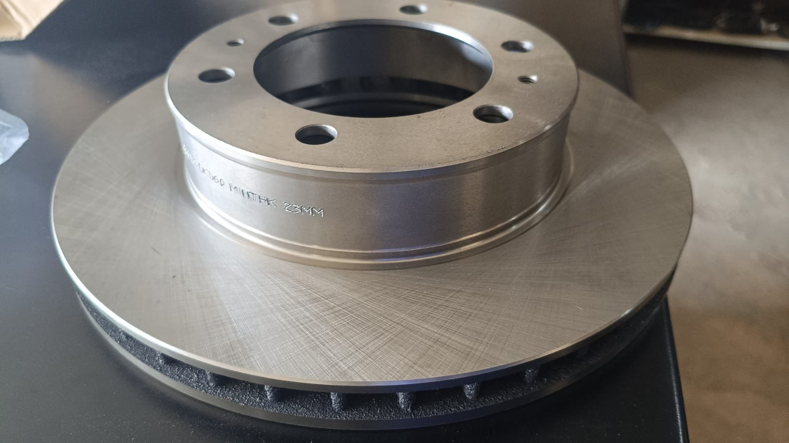
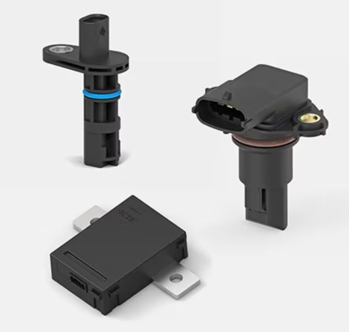

Peças e Acessórios
Encontre qualidade, preço justo e peças para várias marcas de veículos.
Solicitar CotaçãoTrabalhamos com peças novas e também com peças de segunda mão em ótimas condições, cuidadosamente testadas para garantir qualidade, durabilidade e segurança. Oferecemos soluções completas no ramo automotivo, incluindo venda de peças, montagem, substituição e reparação de componentes mecânicos. Realizamos serviços de mecânica geral, como reparação de motores, suspensão, travagem, troca de peças e manutenção preventiva, sempre com foco na eficiência e no bom funcionamento da viatura. O nosso compromisso é garantir um serviço rápido, confiável e acessível, ajudando cada cliente a manter o seu veículo em perfeito estado. Se não encontrar a peça que precisa, nós ajudamos a localizar e fornecer a melhor solução para o seu caso.
⚠️ Serviços elétricos temporariamente indisponíveis.

Peças internas e externas

Amortecedores e sistemas

Discos e pastilhas

Sensores e módulos
Trabalhamos com peças e acessórios para diversas marcas de viaturas utilizadas em Moçambique.
E muito mais marcas disponíveis mediante consulta.
NA PM AUTO
O CLIENTE FALA E NÓS RESOLVEMOS